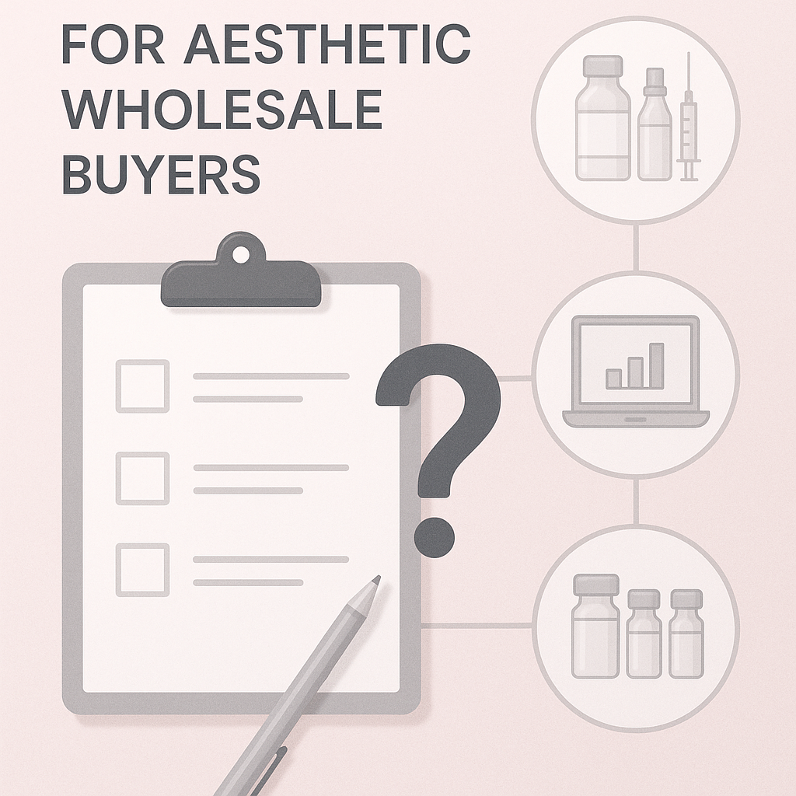
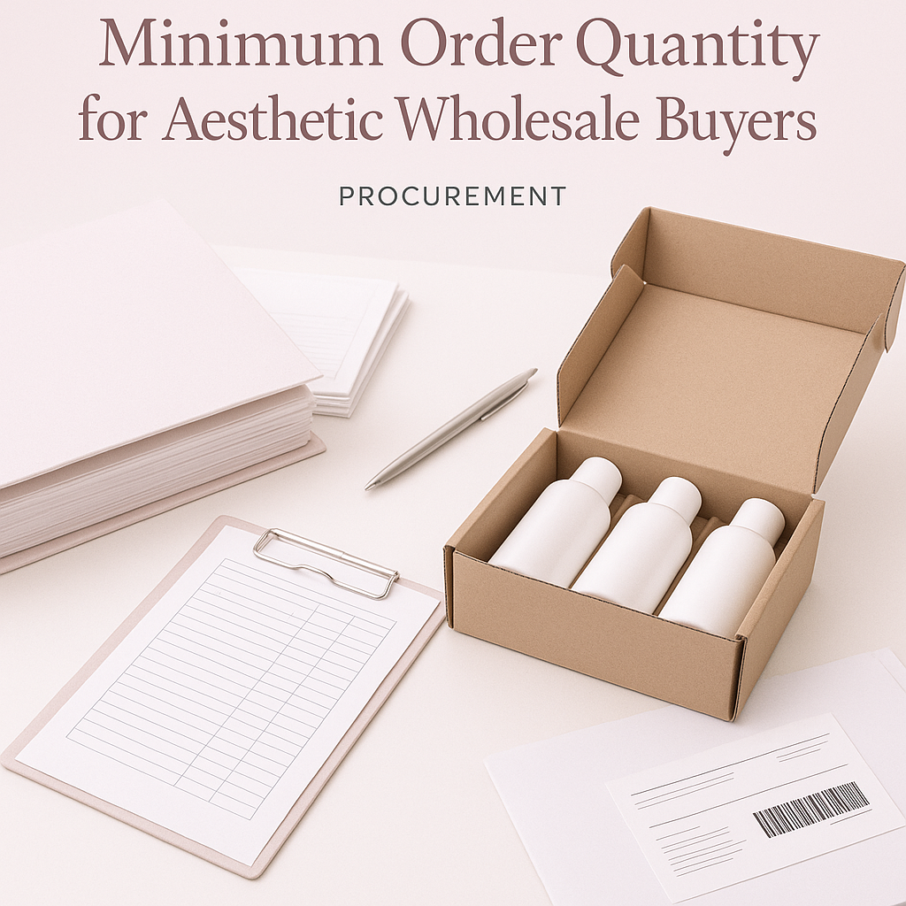

Explore the importance of minimum order quantities for aesthetic wholesale buyers and how to navigate procurement effectively.
For aesthetic wholesale buyers, understanding the concept of Minimum Order Quantity (MOQ) is crucial. It directly impacts procurement strategies, inventory management, and overall business profitability. Many buyers find themselves navigating complex supplier requirements, which can lead to confusion and inefficiencies in sourcing products. This guide aims to clarify the significance of MOQs and provide actionable insights for making informed purchasing decisions.
In the competitive landscape of aesthetic supplies, having a clear grasp of MOQs can enhance your negotiation power with suppliers, streamline your ordering process, and ultimately improve your bottom line. Whether you are a clinic, spa, reseller, or distributor, knowing how to approach MOQs can significantly influence your operational success.
Key Takeaways
- Understanding MOQs helps in effective inventory management and cost control.
- Evaluate supplier flexibility regarding MOQs to optimize order sizes.
- Communicate clearly with suppliers about your needs to avoid misunderstandings.
- Consider the impact of shipping and packing on your overall costs.
- Plan for reorders by analyzing sales trends and product demand.
What this guide covers
- Understanding Minimum Order Quantity
- Relevance to different buyer types
- Comparison criteria for suppliers
- Checklist for requesting quotes
- Logistics considerations
- Planning for reorders
What buyers should understand first

Minimum Order Quantity (MOQ) refers to the smallest quantity of a product that a supplier is willing to sell. For aesthetic wholesale buyers, this concept is vital as it influences purchasing decisions and inventory levels. Aesthetic products can range from skincare items to advanced medical devices, and each category may have different MOQs set by suppliers. Understanding these quantities helps buyers plan their orders effectively, ensuring they meet both business needs and budget constraints.
Buyers should also be aware that MOQs can vary significantly between suppliers and product types. Some suppliers may offer flexible MOQs, allowing buyers to order smaller quantities, while others may have strict requirements. Knowing the nuances of MOQs can help buyers negotiate better terms and make more informed purchasing decisions.
Which buyers is this most relevant for?
This topic is particularly relevant for clinics, spas, resellers, and distributors involved in the aesthetic industry. Each of these buyer types has unique procurement needs and challenges when it comes to MOQs. For instance, a clinic may require a steady supply of specific products for patient treatments, while a reseller might focus on stocking a diverse range of items to meet customer demand.
Understanding MOQs is essential for effective order planning. Buyers must evaluate their inventory turnover rates, seasonal demand fluctuations, and cash flow constraints when determining how much to order. This knowledge enables them to align their purchasing strategies with their business objectives, ensuring they maintain optimal stock levels without overcommitting resources.
How to compare options before ordering
When considering different suppliers, buyers should evaluate several criteria to ensure they are making the best decision regarding MOQs and overall procurement:
- Product Type: Assess whether the products meet your specific needs and quality standards.
- Brand Reputation: Research the supplier's reputation in the market and their track record with other buyers.
- Packaging: Check if the packaging meets your requirements for storage and presentation.
- Batch/Expiry Visibility: Ensure that the supplier provides clear information on product batches and expiration dates.
- Supplier Communication: Evaluate the responsiveness and clarity of communication from the supplier.
- Destination Requirements: Consider shipping options and costs based on your location and delivery needs.
Buyer checklist before requesting a quote

- Define your product requirements clearly.
- Determine your budget and acceptable MOQ.
- Gather information on potential suppliers.
- Prepare questions regarding shipping and handling.
- Check for any additional fees or charges.
- Ensure you have your business documentation ready for verification.
Shipping, packing and documentation questions
Logistics play a critical role in the procurement process for aesthetic wholesale buyers. Here are some common questions to consider:
- What are the shipping options available, and how do they affect delivery times?
- Are there specific packing requirements for the products being ordered?
- What documentation is needed for customs clearance, if applicable?
- How does the supplier handle damaged or lost shipments?
- What are the return policies for unsatisfactory products?
MOQ, quotation and reorder planning
When preparing to place an order, it’s essential to have a clear understanding of your quantity needs, product variants, and destination details. Start by analyzing your sales data to forecast demand accurately. This will help you determine the appropriate MOQ for your initial order and any subsequent reorders.
Additionally, keep in mind that SOLA can assist in confirming current availability and providing wholesale quotations tailored to your specific needs. This proactive approach can streamline your procurement process and ensure you have the right products on hand when you need them.
FAQ
What is the typical MOQ for aesthetic products?
The typical MOQ can vary widely depending on the supplier and product type, ranging from a few units to several dozen.
How can I negotiate MOQs with suppliers?
Communicate your needs clearly and demonstrate your potential for long-term business to negotiate better terms.
What happens if I can’t meet the MOQ?
Some suppliers may allow for smaller orders at a higher price per unit, while others may not accommodate lower quantities.
How often should I reorder products?
Reorder frequency depends on sales trends, product shelf life, and your inventory turnover rate.
Can SOLA help with sourcing products?
Yes, SOLA can assist with sourcing, confirming availability, and providing wholesale quotations tailored to your needs.
Contact SOLA for wholesale quotation via WhatsApp.
Planning a wholesale request?
Send product names, quantities and destination for a tailored discussion.
Contact SOLA on WhatsApp →General educational content for professional buyers. Not medical, legal, regulatory or import advice.